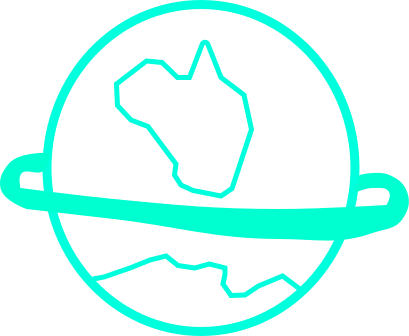
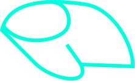
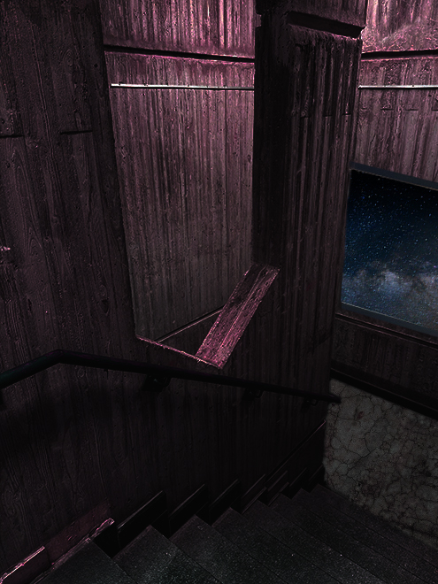
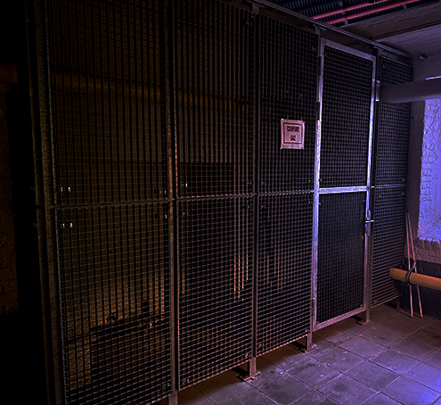
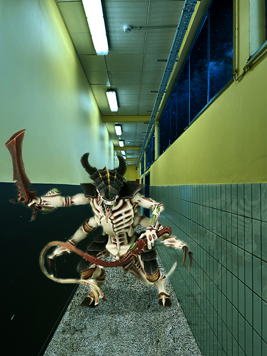

pinocchio
1er janvier 2172
J'ai été contacté par une entreprise de transport de matériel, bien que ce travail ne soit pas ce dont je rêvais, il paye bien et surtout il m'est assuré de l'avoir. Il a une durée de 10 ans, cela me permettra de pouvoir repartir sur un nouveau pied après l'incendie qui a ravagé ma maison, quand je rentrerais j'aurais même assez d'argent pour m'en racheté une nouvelle.

10 février 2172
QUE M'ONT T’-ils fais ?? qu'ont t'ils fais de mon corps ? après 1 mois de cryostase je ne me reconnais plus, ils ont remplacés chacun de mes membres en implant, et je n'ose même pas essayer de me regarder dans un mirroir. Lorsque j'ai signé pour des "améliorations physiques", je ne pensais pas qu’ils seraient si littéral. ils m'ont même gravés un code barre sur le poignet. J'ai aussi reçu les ordres de travail depuis mon connecteur neural et cela semble assez simple: nettoyer la coque du vaisseau et bricoler le moteur la plupart du temps.

13 février 2172
Bien que la solitude se fasse ressentir, ces jours m'ont permit d’accepter la situation. Le vaisseau étant dirigé par une I.A. Je suis seul dans cette énorme machine nommée " La Baleine", j'ai remarqué la présence d'une salle de pilotage malgré tout, cela veut certainement dire que le vaisseau a dû être piloté par des humains fut une époque. J'ai réparé une entrée d'air du moteur qui était abimée et fais une vérification de la cargaison. Ça me surprend que l'on puisse utiliser autant d'arme pour une seule guerre bien que la Ruche mère, cette infâmeté biologique, soit un ennemi avec une récursivité absurde.
23 décembre 2182
Cela fais bien longtemps que je n'ai pas pris l'initiative de ressortir mon carnet mais j'ai besoin de me vider l'esprit. L'entreprise m'a contacté hier, le contrat a été rallongé. Je ne savais pas qu’ils avaient le pouvoir de faire ceci, mais je suis bloqué sur ce vaisseau de toute manière. ils me considère comme leur objet, leur propriété. C'est tellement injuste.

25 décembre 2182
123 ans que j'ai pris, je ne sortirais jamais d'ici si je reste sans rien faire. Tout à l’heure, j’essaierai de rentrer dans la salle de contrôle et réquisitionner ce vaisseau. C'est fou comme ils peuvent se permettre de m'annoncer cette nouvelle ce matin comme si de rien n'était !
J'ai réussi à rentrer, à démarrer le moteur et à choisir ma planète comme destination. L'avancement technologique de La Baleine m'a permis de faire tout cela sans aucune connaissance technique.Ça dois être pour cela que le métier de pilote n'existe plus vraiment de nos jours. Il me faudra 6 mois avant d'approcher l'atmosphère de P.L.E.Z.Y.R 273, et je compte bien me la couler douce durant le temps restant.

26 janvier 2071
il y a eu un accident avec un vaisseau infecté par un tyrranide de la Ruche, j'ai du m'enfuir et me cacher dans les ventilations afin d'écrire ceci. Le vaisseau est HS. Seulement branché aux générateurs de secours, les lampes commencent lentement à baisser en puissance. Je vais devoir chercher une capsule de secours dans peu de temps, je l'entend courir dans les murs, il me traque.
J'ai réussi a atteindre la capsule, j'ai faillit y rester tout à l'heure quand je l'ai croisé dans un couloir. j'ai réussi à fermer une porte entre nous avant qu’il ne me rattrape. Je l'entend frapper avec ses griffes en espérant casser la vitre. Je vais entrer dans la capsule dans peu de temps, la cryostase va me tenir endormi jusqu'à ce que j'atteigne la planète la plus proche.
